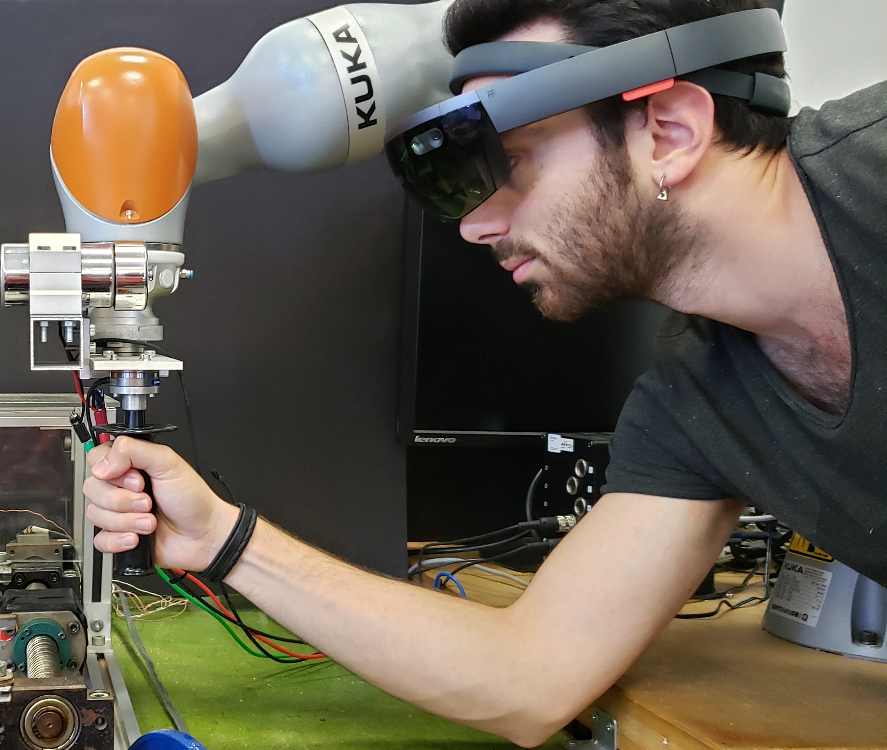
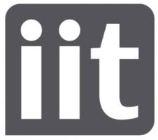
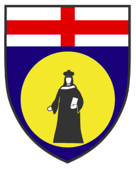

Experience
Ph.D. Student


Italian Institute of Technology / University of Genoa
Nov 2022 - Nov 2025 (Expected)
Genoa, IT
Supervisor: Dr. Arash Ajoudani
Research Fellow
Italian Institute of Technology
Jun 2021 - Sep 2022
Genoa, IT
Add here.
Supervisor: Dr. Arash Ajoudani
Research and Teaching Assistant
Koc University
Sep 2018 - Jul 2020
Istanbul, TR
Courses: Robotics, Dynamic Modeling and Control, Computer-Based Modeling and Simulation, Manufacturing Processes, Mechanical Engineering Design Project
Tutor
Koc University
2014 - 2018
Istanbul, TR
Tutored in Koc University Office of Learning and Teaching.
Courses: Introduction to Mechanical Engineering, Statics and Mechanics of Materials, Numerical Methods for Mechanical Engineering, Engineering Materials